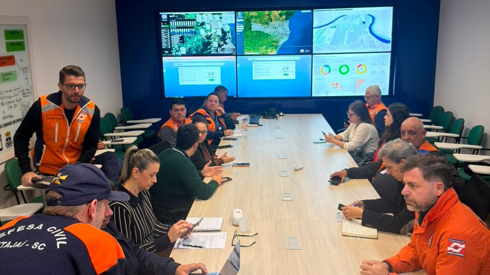
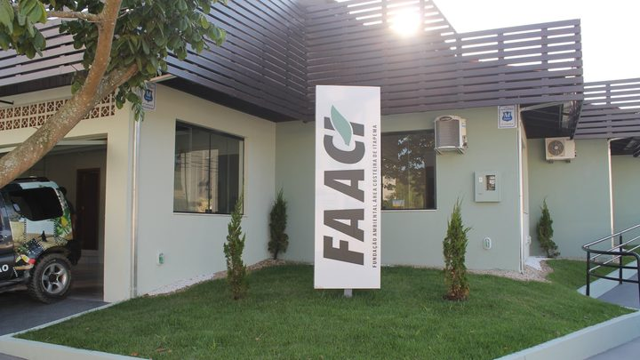

Santa Catarina · Clima
Santa Catarina · ClimaTemporal com granizo segue até terça em Santa Catarina, e o litoral deve receber de 100 a 150 milímetros
A chuva que está caindo enquanto a prevenção é planejada.
O encontro juntou os colegiados de Defesa Civil, Comunicação, Turismo e Desenvolvimento Econômico para combinar o que fazer antes da chuva. A campanha El Niño Não Brinca vai avisar a população, e a região deve ganhar uma rede de 38 estações meteorológicas.
Em 30 segundos · Modo de Leitura, formato original Santa Informa
Itapema participou na quarta-feira, 26 de agosto, de um encontro regional sobre o El Niño.
A reunião juntou os colegiados de Proteção e Defesa Civil, Comunicação, Turismo e Desenvolvimento Econômico.
O assunto principal foi a campanha regional El Niño Não Brinca.
O material vai para televisão, rádio, redes sociais, banner, jornal e páginas de internet.
A proposta declarada é informar sem alarmismo.
Estão previstas 38 estações meteorológicas numa rede colaborativa.
Elas medem chuva, umidade, temperatura, pressão e, em algumas unidades, vento.
A lista de ações inclui limpeza de bueiro, vala e rio, e vistoria em encosta.
Inclui também mapear ponto de alagamento e atualizar plano de contingência.
Itajaí levou o trabalho com o setor empresarial e Ilhota falou de apoio operacional.
Meio AmbientePublicada em Redação Santa Informa

Enquanto o temporal deste fim de semana ocupa o telefone da Defesa Civil, as cidades do litoral já estão organizando o passo seguinte. Itapema participou na quarta-feira, 26 de agosto, de um encontro regional que reuniu representantes dos colegiados de Proteção e Defesa Civil, Comunicação, Turismo e Desenvolvimento Econômico, com o objetivo de alinhar as ações de prevenção diante dos possíveis impactos do El Niño.
O principal assunto foi a campanha regional "El Niño Não Brinca", montada para orientar a população sobre risco e medida preventiva. A proposta, conforme o registro do encontro, é "ampliar o acesso a informações claras e responsáveis, sem alarmismo". O material vai circular em televisão, rádio, redes sociais, banner, jornal e página de internet. Espalhar por tanto canal tem uma lógica simples: aviso que fica só num lugar alcança só quem já estava olhando para lá.
A lista de ações discutidas é bem concreta. Limpeza de bueiro, vala e rio. Vistoria em área de encosta. Identificação dos pontos que costumam alagar. Atualização dos planos de contingência. Monitoramento meteorológico e hidrológico. E preparação de equipe e de equipamento antes de a chuva chegar. Entrou também na conversa a implantação de uma rede colaborativa com 38 estações meteorológicas, equipadas para medir chuva, umidade, temperatura e pressão, e vento em algumas unidades.
Itapema está entre os municípios que avaliam iniciativas para reforçar a estrutura da própria Defesa Civil. Itajaí apresentou o trabalho feito junto com o setor empresarial, e Ilhota contou como articulou apoio operacional. Outro ponto levantado na reunião foi a necessidade de manter a população informada o tempo todo, com protocolo para atualizar alerta rápido e prioridade para informação de fonte oficial e técnica. "A participação de Itapema no encontro reforça a integração regional e o trabalho preventivo para ampliar a capacidade de resposta dos municípios", disse o diretor da Defesa Civil de Itapema, Cabo Motta.
O resumo de 30 segundos está no topo e a versão completa é o texto acima. Aqui ficam as três leituras da casa sobre o mesmo assunto.
Clara, a otimista
Reunião de prevenção é o tipo de coisa que nunca vira manchete e que evita tragédia. Enquanto o temporal desta semana passa por cima da gente, tem gente sentada numa sala combinando quem limpa qual bueiro. Esse trabalho sem graça é exatamente o que segura o estrago lá em janeiro.
E 38 estações medindo chuva no litoral mudam o jogo. Alerta bom precisa de dado local. Saber que choveu 80 milímetros em Itapema, com nome e endereço, permite avisar a rua certa em vez de avisar o estado inteiro e torcer.
Seu Prudêncio, o criterioso
Merece atenção o prazo das 38 estações. O texto diz que estão previstas, e previsto ainda não é instalado. Estação meteorológica pede compra, local, energia, internet e manutenção, e costuma ser a manutenção que falta a partir do segundo ano.
Vale acompanhar quantas dessas estações ficam no nosso trecho de litoral e quem responde pelo dado quando o aparelho para de enviar. Rede colaborativa funciona bem quando cada colaborador sabe exatamente qual é a parte dele. Uma sugestão útil ao leitor: quando a campanha começar a circular, salve o canal oficial da Defesa Civil da sua cidade. Na hora do alerta, é por ali que o aviso chega primeiro.
E é justo reconhecer o desenho da reunião. Sentar Defesa Civil com Turismo, Comunicação e Desenvolvimento Econômico na mesma sala foi acertado, porque em cidade de praia o temporal derruba reserva de hotel e fecha comércio junto com a rua. Tratar prevenção como assunto de todo mundo, e não só do colete laranja, é o começo certo.
Caco, o sarcástico
"El Niño Não Brinca" é um nome de campanha muito sincero. Ele realmente não brinca. Chega, alaga a esquina de sempre e vai embora sem pedir desculpa a ninguém.
Fiquei feliz de saber que teremos 38 aparelhos medindo pressão atmosférica. Aqui em casa a medição é feita pelo joelho da vó, que é gratuita, não precisa de internet e até hoje não errou.
Limpeza de bueiro entrou de novo na lista de ações. Entra todo ano. A essa altura o bueiro já deve achar que faz parte da família.
Fontes: Prefeitura de Itapema, publicação de 27 de agosto de 2026 sobre a participação do município no encontro regional realizado na quarta-feira, 26 de agosto. Dela saem os quatro colegiados presentes, o nome e o objetivo da campanha "El Niño Não Brinca", a frase sobre ampliar o acesso a informações claras e responsáveis sem alarmismo, os canais de divulgação, a lista de ações preventivas, a previsão de 38 estações meteorológicas e o que medem, as experiências apresentadas por Itajaí e por Ilhota e a declaração do diretor Cabo Motta reproduzida no texto. A publicação não nomeia a associação de municípios nem informa o local do encontro, e por isso a matéria também não informa. A foto é de divulgação da própria prefeitura, mostra agentes públicos em serviço e foi recortada para o formato do site. O aviso de temporal citado no primeiro parágrafo sai da nossa matéria de hoje, linkada no texto.
Santa Catarina · ClimaA chuva que está caindo enquanto a prevenção é planejada.
 Litoral Norte · Infraestrutura
Litoral Norte · InfraestruturaA cidade vizinha já tinha começado a mexer na drenagem.

Itapema · Meio AmbienteOutra frente ambiental em movimento na cidade.